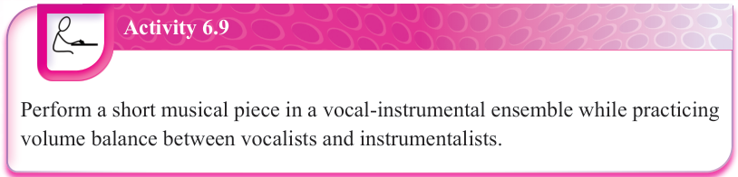
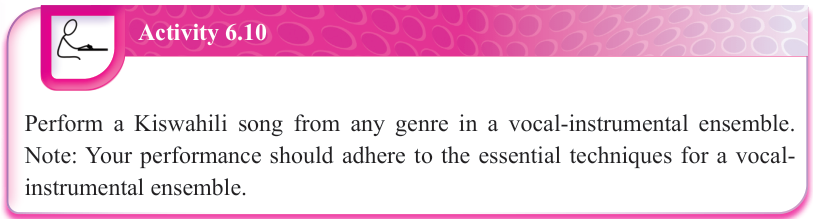

Activity 6.9
Perform a short musical piece in a vocal-instrumental ensemble while practicing volume balance between vocalists and instrumentalists.

Activity 6.10
Perform a Kiswahili song from any genre in a vocal-instrumental ensemble.
Note: Your performance should adhere to the essential techniques for a vocal-instrumental ensemble.
Exercise 6.4
Answer the following questions.
Introduction to piano
A piano is a large keyboard musical instrument with a wooden case enclosing a sound board. It has strings that sound when struck by hammers operated from a keyboard. The standard modern piano has 88 buttons, commonly named keys, with a range of seven full octaves plus some few keys.